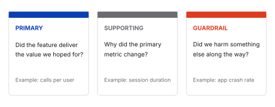
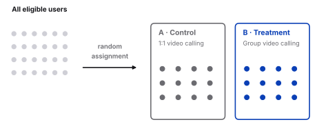
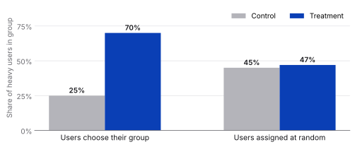
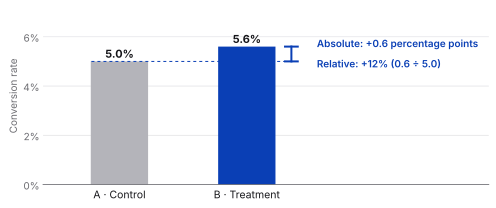
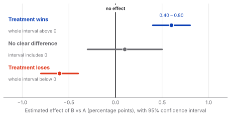

Statistics
A/B Testing
How to tell whether a change really made things better

What is it?
A/B testing compares two versions of a product experience to understand which one performs better. Users are randomly split into two groups:
- A control group, which experiences the current version.
- A treatment group, which is exposed to the new feature.
Why do we need A/B testing?
Observed differences between two versions may simply be due to random chance. Statistical inference helps determine whether a difference is likely to be genuine before a decision is made.
The two problems A/B testing is exceptionally good at solving are:
- Confusing correlation with causation (spurious correlation).
- Selection bias.
How to design an A/B test
This is a common interview question. A clean answer walks through four steps: hypothesis, metrics, experiment design, and analysis of the results.
Step 1: Define the hypothesis
A good experiment starts with a clear, testable hypothesis: a statement that connects the feature to an expected outcome. A strong hypothesis has three parts:
- The change. What are you introducing?
- The expected impact. What do you think will happen?
- The metric. How will you measure it?
Step 2: Choose metrics
The goal is not to track activity, but to measure whether the feature is delivering real value.
- Primary metric. Directly reflects the success of your hypothesis. For example, average time spent per user or number of calls per user when the hypothesis is about increasing engagement.
- Supporting metrics. Provide context and help explain why the primary metric changed. Examples: average order value, bounce rate, or session duration (if conversion rate is measured).
- Guardrail metrics. Ensure you don't improve one aspect of the product while harming another.

Before running an A/B test, ask
- What decision am I trying to make?
- What user behavior represents success?
- Can I measure it reliably?
- Will the experiment likely affect this metric?
- Are there guardrail metrics to ensure I'm not causing unintended harm?
Step 3: Design the experiment (control vs treatment)
Split users into two groups:
- Control group continues with the existing experience (1:1 video calling).
- Treatment group gets access to the new feature (group video calling).

An important decision is who to include in the experiment.
Key principle: randomization
Randomization is important because it:
- Creates comparable groups, so the only systematic difference is the tested change.
- Reduces selection bias by giving each participant an equal chance of being assigned to either group.
- Balances known and unknown factors (such as age, device, or user behavior) across groups on average.
- Supports causal conclusions, allowing you to attribute differences in outcomes to the treatment rather than other variables.
- Makes statistical tests valid, since most inferential methods assume random assignment.
Why it matters
Without randomization, it's difficult to know whether the change caused the result or whether some other factor did. Such a factor is called a confounder, and confounders can lead to incorrect conclusions about cause and effect.

Also think about how long to run the experiment. The duration should be long enough to capture typical user behavior, but not so long that it delays decision-making.
Pro tip
In interviews, clearly state who is in control vs treatment, how users are assigned, and what you are comparing. Also consider network effects. For example, if a group of friends interacts frequently, assigning them to different groups can introduce bias. Where possible, group related users together to minimize interference.
Checklist for reducing bias
Before launching an A/B test, ask yourself:
- ✅ Have I clearly defined who is eligible?
- ✅ Are participants assigned randomly?
- ✅ Are the control and treatment groups similar in important characteristics?
- ✅ Are both groups exposed to the same conditions at the same time?
- ✅ Can participants influence which group they're assigned to? (If yes, redesign the assignment.)
- ✅ Have I verified that the allocation matches the intended split?
Step 4: Analyse results and draw conclusions
The question to ask: "Did B perform better because of our change, is the improvement large enough to matter, and did it avoid causing other problems?"
| # | Check | What to do |
|---|---|---|
| 1 | Experiment validity | Make sure the experiment was conducted correctly. Check randomization, and look for problems such as missing data, users who saw both versions, or unequal exposure. |
| 2 | Effect size | Calculate the key metrics and the effect, as an absolute and a relative improvement (see below). |
| 3 | Statistical significance | Ask whether this difference could have happened by random chance, using the p-value. |
| 4 | Confidence interval | Look at the range of plausible effects. |
| 5 | Supporting and guardrail metrics | The change may not be a success if it created other problems. |
| 6 | Segments | Check important user groups carefully to see whether the new design helps some users but harms others. |
| 7 | Decision | Treatment wins, no clear difference, or treatment loses. |
Effect size: absolute vs relative
- Absolute improvement. The difference between the groups.
- Relative improvement. The percentage increase compared with the original.

Statistical significance and the p-value
If there were actually no difference between A and B, how likely is it to observe a difference this large? If that is unlikely (commonly p < 0.05), the difference is considered statistically significant.
Confidence intervals
A confidence interval shows the range of plausible effects. It tells us, for example: based on this experiment, the true improvement is plausibly between 0.40% and 0.80%.

Key takeaways
- Randomize. Random assignment makes the groups comparable, so a difference can be attributed to the change and not to a confounder.
- Define success before you start. Choose one primary metric, add supporting metrics for context and guardrail metrics to catch harm.
- Check validity first. Verify the split, missing data and unequal exposure before looking at results.
- Size matters, not just significance. Report the absolute and relative effect, not only the p-value.
- Use the confidence interval. It shows the range of plausible effects and makes the decision clear: treatment wins, no clear difference, or treatment loses.
- Look at the whole picture. Guardrail metrics and key segments can turn a win into a problem.